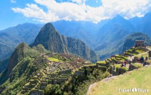
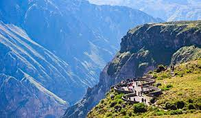
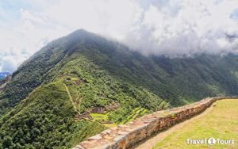
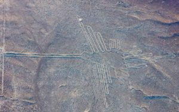
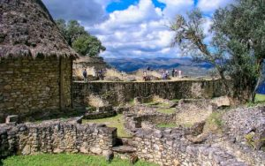
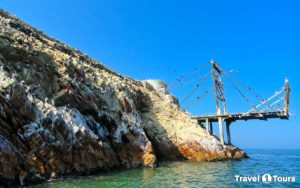
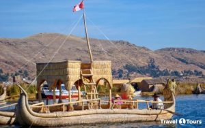
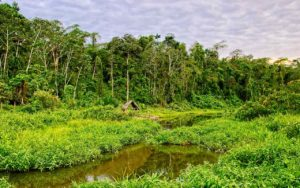
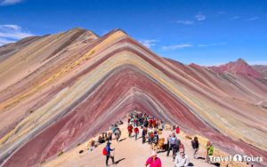

Hablar de Perú es hablar de uno de los países más variados de todo el mundo. Cada una de sus regiones alberga cientos de espacios arqueológicos, áreas naturales protegidas, parques nacionales, ecosistemas, santuarios, playas y poblados. Ni qué decir de su enorme repertorio gastronómico, sus miles de especies de animales y las innumerables actividades disponibles para los amantes de la aventura. Hay que tener en cuenta que un solo viaje no será suficiente para conocer todos sus atractivos. Para que tengas un mejor panorama, hemos elaborado una lista con los mejores destinos del país.
En este apartado os mostraremos una selección de lugares imperdibles que ver en Perú. Todos ellos son básicos para descubrir la identidad del país.
El Santuario Histórico de Machu Picchu es el destino turístico más visitado de Perú y de América. Es una antigua ciudad inca que está ubicado en el corazón de los Andes peruanos. Fue construido en el siglo XV, durante la época inca. Se cree que esta ciudad sagrada fue un importante lugar de culto religioso y de descanso durante el reinado del Inca Pachacutec.
El Valle del Colca es un extenso valle de tierras fértiles que bordea el río Colca. También es conocido como el Valle del Fuego. Es otro de los más importantes atractivos del Perú; pues aquí están ubicados el cañón del Colca (uno de los cañones más profundos del mundo), los baños Termales de la Calera y el famoso mirador la Cruz del Cóndor, donde podrás apreciar el vuelo de los cóndores.
El Parque Arqueológico de Choquequirao es otro de los mejores destinos turísticos de Perú. Por ello, el año 2017 fue declarado como una de las mejores rutas de trekking del mundo. La ciudad inca de Choquequirao está ubicado entre las estribaciones que forman el gran Cañón del Apurímac y el nevado de Salkantay.
Las Líneas de Nazca son un grupo de antiguos geoglifos grabados en la arena del desierto. Están ubicados en el Valle de Nazca, Valle de Palpa y en el desierto de Jumana. Estos enigmáticos geoglifos fueron creados por los hombres de la Cultura Nazca (200 a.C. – 700 d.C.) y se extienden sobre una superficie de 450 Km².
Es una ciudadela pre inca amurallada con bloques de piedras. Fue construido por la cultura Chachapoyas (800 d.C. al 1470 d.C.), pero posteriormente fue ocupado por los incas. Está ubicado sobre la cima de la colina Barreta, en los Andes nororientales del Perú, en la región Amazonas.
Son un conjunto de islas y formaciones rocosas que están ubicados a media hora de la costa de Paracas. Estas islas son el hogar de miles de aves guaneras y especies marinas: lobos marinos, pingüinos de Humboldt, pelícanos, lobos marinos, leones marinos, etc.
El lago Titicaca es el lago navegable más alto del mundo. Es una de las mayores reservas de agua dulce en América del Sur. Está ubicado en la meseta del Collao, entre Perú y Bolivia. Tiene una extensión de 8562 km² y una profundidad de 281 metros. Y según la mitología andina, de las frías y diáfanas aguas de este lago emergieron los fundadores del gran imperio inca.
El Parque Nacional de Manu es un área natural protegida con la mayor diversidad de reptiles, anfibios, mariposas diurnas y aves de todo el planeta. Es Patrimonio Natural de la Humanidad. Es una de las mayores reservas de biosfera en el Mundo. Y fue creado con el fin de catalogar, preservar y dará conocer a la humanidad la herencia natural y cultural de la selva amazónica.
Es un espacio natural que protege las formaciones geológicas, nevados, lagunas, flora, fauna y los variados ecosistemas de la Cordillera Blanca, la cordillera tropical más extensa del mundo. El año 1985 fue declarado Patrimonio Natural de la Humanidad.

La Montaña Sagrada de Vinicunca o Montaña 7 Colores es el segundo destino turístico más visitado de Cusco. Y según el sitio web Business Insider, es uno de 100 viajes que todo el mundo debería hacer una vez en la Vida.
